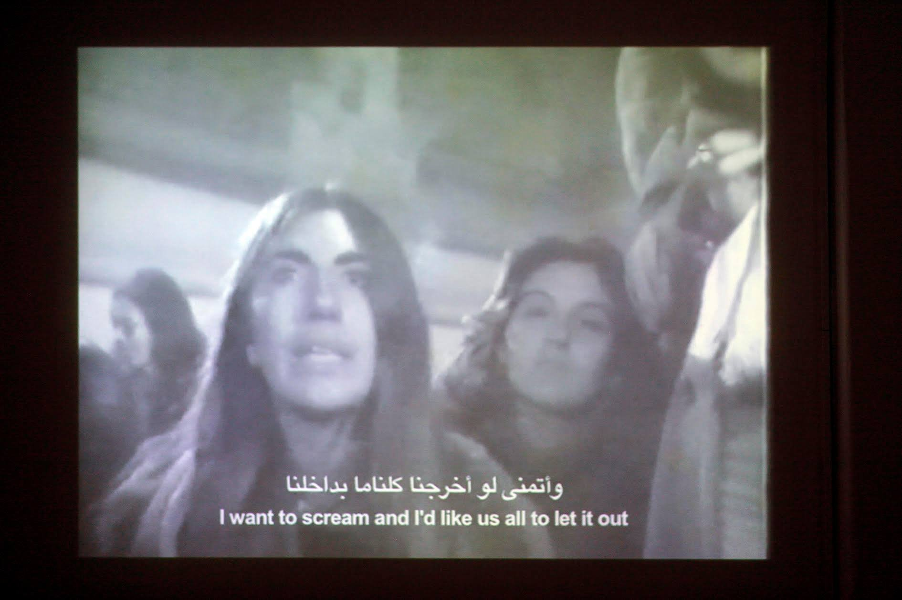

لقطة من فيلم ألبرتو جريفي، المصحة - ليا، ٢٧ دقيقة، ١٩٧٧
مصدر الصورة: لقطة من فيلم ألبرتو جريفي، المصحة - ليا، ٢٧ دقيقة، ١٩٧٧. من معرض "مزمن" (٢٠١٦)، جميع الحقوق محفوظة لمركز الصورة المعاصرة
عزيزي محمد:
أود أن أبدأ رسالتي بأن أؤكد على أنني أشاركك الكثير من الحيرة تجاه الفن المعاصر عامة، وفي مصر خاصة. ويبدو هذا موقف غريب على شخص أمضى أكثر من 17 عامًا يعمل في مجال الفن المعاصر بوسائطه المختلفة. فما بال المشاهد/القارئ العادي؟ ولكن يقف موقفنا المشترك عند هذه النقطة، فأنا أختلف معك في كثير مما أثرته، وصدمتُ قليلًا من عدم التعاطي أو الأخذ في الاعتبار كثير مما قيل في الندوة.
باستثناء العزيز محمود خالد، الذي أخذ نصيب الأسد من سخريتك وتهكمك غير المُستحق. فهناك العديد من النقاط التي طُرحت تمس جوهر ما طرحته أنت، وحاولت بأشكال مختلفة الرد على الكثير من أسئلتك أو حيرتك وعدم استساغتك لجوانب عديدة من الفن المعاصر. وعلى أي حال أظن من الضروري فتح مثل هذا الحوار (في مصر وبالعربية) لمجال نادرًا ما يستحوذ على أي نوع من الاهتمام خارج دوائره الضيقة.
يبدو الفن المعاصر مأزوم في تعريف ماهيته ومصطلحاته، فهل هو معاصر أي لاحق للفن الحديث؟ (هذا تعريف تاريخي خطي بالأساس هو الشكل الشائع للدراسة الأكاديمية للفن المعاصر) أو معاصر بمعنى أنه ملازم لوقته وزمنه؟ وهذا هو المعنى الأكثر موضوعية وإن كان يفترض أن الفن سينتهي تاريخيًا في عصرنا (وأعتقد أن هذا قد يكون جائزًا مع الأخذ في الاعتبار السعي الحثيث لتطوير تقنيات الذكاء الاصطناعي التي أصبحت «تنتج» فنًا بشكل آني وبالكيلو!).
ويحق لنا أن نسأل -مع العلم بالسياق الأوسع للفن المعاصر كممارسة فنية تطورت في السياق الغربي بعد الحرب العالمية الثانية، ومع صعود الحركات الطلابية في الستينات وأفول عالم الحرب الباردة، بعد نهايات السبعينيات وانهيار حائط برلين وتبعات انهيار الاتحاد السوفيتي- ماذا نعني عندما نستخدم مصطلح الفن المعاصر في مصر؟ هل نعني مُجمل الممارسات التي ظهرت وتطورت بعد هزيمة 1967 (جاليري 68 نموذجًا)؟ أم بعد إنشاء قصر الفنون 1984؟ أم مع إقامة أول صالون شباب عام 1989 (وهذا اختيار سليم كون صالون الشباب الأول ضم ما يمكن تعريفه بأوائل تجارب فنانين مصريين مع وسائط وأساليب فنية «جديدة» على ما تم تقديمه سابقًا)؟
يصبح النقاش عندئذ ليس مجرد استرجاع أو استعادة ما تم طرحه في سياق غربي بحت، ولكن مجموعة من الأسئلة والمبادرات التي كانت بنت سياقها بالكامل والتي ساهمت بشكل فعّال وحقيقي (من أول أسئلة حسن سليمان في منشور جاليري 68 أعلاه لمراجعة محمود بقشيش لصالون الشباب الأول) في زحزحة أسئلة ما هي أساليب ومقاربات الفنانين المصريين، وكيف يمكنها أن تشتبك مع واقعها بشكل صادق وجاد.
يتغافل الكثيرون عن تعقد السياق التاريخي المصري وغناه، ويكيل الاتهامات للعاملين في هذا المجال بشكل عنيف وقاسٍ كما فعلت أنت، متجاهلًا أن كثيرين منا، ممن يعملون في هذا المجال، على علم بهذا السياق وأن ما نناقشه ليس مجرد إعادة تدوير فوائض الرأسمالية (المادي والمعنوي منها) بشكل آلي وغير واعي أو نقل أعمى ومصطنع للغرب.
وبمناسبة الحديث عن الرأسمالية وفوائضها، وهجومك الضاري على ما قاله محمود خالد، عن بديهية أننا يمكننا «بيع» العمل الفني ولكن هذا يعتمد على كيفية بيع هذا العمل (السياق والإطار يحدد الكثير من طريقة استقبال أي عمل سواء كان لغرض مشاهدته أو بيعه) ولمن ولماذا. لا أرى في ذلك أي تناقض أو حتى ما يستدعى هذا الكم من السخرية والتهكم. فمن البديهي أن يحصل الفنان على درجة من الدعم المادي (وذلك يشمل مكانًا للعمل ومواد العمل وراتب أو أجر لأساسيات المعيشة) حتى يستطيع العمل.
كان ذلك أكثر وضوحًا وأقل مدعاة للجدل عندما كانت الدولة تقدم منح التفرغ للفنانين، وكان من المعتاد أن توفر الدولة مساحات وآليات للإنتاج (رغم وجود نقد واضح للنموذج الدولتي للثقافة والفن متمثل في ما أقامه ثروت عكاشة واستمر حتى نهاية الثمانينات). في ظل غياب ذلك واختفائه يصبح السؤال كيف يمكن أن يستمر الفنان في العمل دون وجود تلك الآليات؟ وفي ظل تغيرات كبيرة في اقتصاديات الفن مع مطلع الألفينيات (مع دخول دور المؤسسات الثقافية الدولية والجهات المانحة) ومرة أخرى بعد الثورة (بعد وقف تلك الجهات المانحة وتضييق الخناق تماما على المساحات المستقلة).
ورغم التصور الطوباوي والمحمود لبدائل ولنماذج بديلة (وبالفعل هناك مجموعات داخل المشهد تحاول التفكير في بدائل، مثل مجموعة قاف لام، والتي تناقش مفهوم العمل في المجال الثقافي ومعنى العدالة في الأجور في هذا المشهد)، ولكن لحين الوصول لاقتصاد بديل يشمل الجميع هل من المفترض أن يتوقف الفنانون عن العمل أو العمل بدون مقابل؟ أو يتحاشون دنس الرأسمالية وآلياتها؟
وأنا على وعي تام بمدى «سوقية» تلك الألفاظ (على كل المناحي) وتعالي الكثيرين عن الرد بشكل مباشر وصريح عمّا يمكن فعله في الوقت الحالي، (بعيدًا عن نماذج بديلة تمثل حالات فردية يصعب تعميمها في السياق المصري).
وعلى الرغم من محورية سؤال الطبقة والمزايا الطبقية التي من شأنها الحد من أو المساعدة في تبني مسار تعليمي ومهني محدد (أن يصبح المرء فنانا معاصرًا، انظر كتاب ناف حق وتيرداد ذو القدر «كلاب البورجوازية: هيمنة الطبقة في الفن المعاصر»)، فإني لم أنكر نخبوية الفن المعاصر، وذكرت ذلك بوضوح في الندوة، وفي العديد من المناسبات، بل وأكدت أن أحد مثالب الفن المعاصر هو عجزه عن تناول سؤال الطبقة وتبعات ذلك بشكل جدي وموسع.
ولكن هذا لا يعني أن في غياب آليات من اقتصاد الاكتفاء الذاتي، أن كلاب البورجوازية لا يمكنهم استغلال فائض الدخل لشرائح أكثر غنى في تحقيق شكل من الدعم المادي للفنانين. يمكننا أن ننتقد هذا ولكن التعالي عليه أو المزايدة رد فعل غير مجدي أو مفيد.
والشيء بالشيء يذكر، نعم الخطاب حول الفن المعاصر باللغة العربية غريب ونشاز على مسامع الكثيرين، وأنا بشكل شخصي نادرًا ما قرأت نصًا أو مراجعة لمعرض أو فنان بالعربية وكانت بها من السلاسة والسهولة ما يشير إلى أن ذلك النوع من الفن أخذ حقه في مصالحة اللغة العربية ومعانيها وتراكيبها. وهذا حال أي ظاهرة تجدُ على أي لغة (وهذا ليس حكرًا على العربية فقط)، وهذا لا يتسنى له الحدوث دون اشتباك دائم ومتواصل مع هذا المجال، حتى تفتح اللغة رحابها وأفقها لهذا المجال وتصبح الكتابة والحديث عنه تحدث بشكل تلقائي دون تكلف أو مكابدة (كما يقول الجاحظ).
ولكن ياللمفارقة يا عزيزي، فإن نفس الشكوى تتصدر الخطاب الصادر عن الفن المعاصر بالإنجليزية كذلك! فأصبح مادة للسخرية بالنسبة لكثيرين. وهذا له أسبابه التاريخية (بدءً من كتابات كلمنت جرينبرج وتلميذته روزاليند كراوس وحتى منشور e-flux ولغته المقعرة غير المفهومة) ويمكننا أن نلوم المدرسة الفرنسية لما بعد البنيوية وهوسها بـ«تفكيك» اللغة ورفضها لثبات المعنى أو حتى مآلاته. وبالتالي تصبح غرابة أصل الخطاب حتمية الظهور في ترجمته كذلك.
والمصطلح الذي تحدثت عنه باستفاضة، curator، «قيّم»، كمثال لكسل ورداءة الترجمة، ياللمفارقة، مصطلح كان، ومازال، إشكاليًا وغريب حتى في حيواته السابقة. فالترجمة المعتادة والمعتمدة لدى الكثيرين كانت «قوميسير»، وهي تعريب مباشر وبليد للمصطلح commissaire (من الفرنسية) وحل غير مُرضي لتعريب المعنى رغم وضوحه (أصل المصطلح يعني «المخوّل من قبل السلطة لقيام بمهمة ما») وللمفارقة أيضًا هذا تعريب قريب من مصطلح «كمسري» الذي كان تعريب مباشر لمصطلح «commissario»، عن الإيطالية (وهو يعني المشرف أو المراجع من قبل السلطة) ولعل «كمسري» لفظ أسهل وأخف من «قّيم».. احتمال.
ورغم ابتعاد «قيمّ» عن المعنى الأصلي لـcurator إلّا أن التفاوت في المعنى مقبول، لأن المعنى الأصلي بعيد أيضًا عن الاستخدام الحالي (المعنى الأصلي يقترب من «حفظ»، «رمم»، «عالج» في الأصل اللاتيني للكلمة، واتخذ منحًا دينيًا واضحًا مع سيطرة المسيحية فأصبح curator تعني «راعي الأبرشية»، حتى ظهور طبقة رأسمالية في القرن السابع عشر وأصبحت تعني أمين المقتنيات أو المجموعات الخاصة في المكتبات).
لا ينحصر الموضوع فقط في الكسل والبلادة ولكن حتى بمراجعة تاريخية بسيطة يظهر أن الترجمات البليدة أو التعريب الساذج جزء لا يتجزأ من استعارة ممارسات وطرق التعامل مع مجالات مستجدة أو غير معتادة.
هذا يدفعني لنقطة التمويل واقتصاديات الفن وهي نقطة تكلمنا عنها باستفاضة (أُدرك أن هذا كان على حساب نقاط أخرى) وأثرت بشكل أساسي ليس على شكل ونوع الموارد المتاحة فحسب، سواء للتعليم، (فعلى سبيل المثال لا يتم تدريس أي جانب من الفن المعاصر في الجامعات الرسمية في مصر حتى كتابة هذه السطور) أو الإنتاج، (فمن أجل الحصول على المنح الإنتاجية يجب تطوير المشروع وتقديمه بالإنجليزية في أغلب الوقت) ولكن على نوع الخطاب الذي ننتجه ولماذا.
كانت أغلبية المصادر المتاحة من جهات تمويل أجنبية وبالتالي كان من الصعب إنتاج أو الكتابة باللغة العربية حصرًا، وفي كثير من الأحيان اختار الكتّاب والنقاد الكتابة باللغة الإنجليزية لأن ذلك يعطي فرصة أكبر للنشر (كم منصة تنشر وتدعم الكتابة عن الفن المعاصر باللغة العربية؟)
وفي كثير من الأحيان يعفي اختيار الإنجليزية صاحب/ة النص من شر الرقابة والملاحقة المحتملة. وأحب أن أضيف هنا أنني في كثير من الأحيان كتبتُ باللغة الإنجليزية عن قصد، لأن تبعات تغول السلطة أكبر من أن أتحملها بشكل مباشر، وهذا من الممكن اعتباره نوع من الجُبن والهروب من المواجهة، ولكن هذا حال الكثيرين الذين يعملون في مجال الكتابة والنشر، تصبح الكتابة هي مساومة ومقامرة مستمرة مع سلطة لا يمكن التنبؤ برد فعلها.
قد يكون تلك الحقيقة قد غابت عن ذهنك عند كتابة رسالتك، ولا أختلف معك في أهمية نقد سياسات اللغة والترجمة ولكن كان عليك التعمق بعض الشيء في تاريخ ذلك الخطاب، في السياق المصري على الأقل. وقبل أن نلتفت للجدل اللغوي كان من الأحق أن نلتفت لحدود الإنتاج المعرفي وحرية النشر والكتابة بالأساس، باللغة العربية أو في السياق المصري على الأقل (على رغم من وجود مثل تلك الرقابة في معظم الدول العربية).
أفكر كثيرًا فيما فعلته الثورة في المشهد الفني لأنها طرحت سؤال الجمهور بشكل مُلّح وأعادت أسئلة محورية حول لماذا نصنع الفن المعاصر ومن أجل من؟ وتوقف الكثيرون طويلًا عند هذا السؤال، وآخرون لم يتوقفوا على الإطلاق، فتنوعت الردود ما بين استجابة عفوية للحظة اجتاح فيها الجمهور المجال العام مرة أخرى بفضول وشره للمعرفة مدهش (فظهرت مجموعة سينما التحرير، ومُصرين، والفن ميدان) ومابين مساهمات آنية، تشبه تمارين الصباح في المدرسة (مثل محاولة استلاب الجرافيتي ونزعه من المجال العام لداخل مساحات العرض بالجاليري)، لصمت طويل مترقب، يتبعه عمل فني معقد وغير مباشر (كورال هيستيريا الخائفين لدعاء على).
لا شك أن جميع تلك الإسهامات كانت محاولة للإجابة على سؤال ماذا يعني أن تحاول تقديم ممارسة منخرطة في سياق أوسع من الأسئلة السياسية والاجتماعية والتاريخية الملحة، آخذة في الاعتبار سؤال الجمهور بشكل لم يسبق له مثيل على مر عقود من الزمن.
وهنا تأتي مشاركة أندريا تال، مديرة مركز الصورة المعاصرة السابقة، أثناء الندوة، كمساهمة غاية في الأهمية، والتي توقعت أن تشير إليها في رسالتك، حول سؤال الإقصاء وإمكانية المشاركة في الفن المعاصر عندما تولت هي منصب المدير الفني لمركز الصورة المعاصرة لأول مرة في 2014. وكانت محاولة أندريا وفريق عمل المركز محاولة مخلصة وملهمة لتثوير منهج «القيّم» أو التنسيق الفني للمركز ليعكس تلك الأسئلة الملحة بكثير من الصدق والرغبة في فتح المساحة لقطاعات مختلفة من الجمهور.
وأسفر ذلك عن سلسلة من المعارض التي تناولت موضوعات السجن، العزلة، التعب والإرهاق النفسي، القلق حول مستقبل المياه في مصر، وغيرها، وجميعها موضوعات لها تبعات سياسية واجتماعية حرجة وشائكة.
كيف يمكن إذًا التغاضي عن هذه التجارب (ولم يكن مركز الصورة وحيدًا في طرح أسئلة شائكة أو ماسة) والحكم على مجمل هذا المشهد بأنه يحاول «تعويض نفسها عن تضييع وقتها مع الثورة» كما تقول؟
يبدو لي أن هناك بعض الانتقائية في موقفك أو من الممكن عدم دراية بمختلف هذه التجارب التي بلا شك تجاوزت الإيماءات السهلة أو الأدائية المصطنعة.
ما قاله أحمد من عدم حبه للفن المعاصر ليست المرة الأولى التي يبذل أحدهم نفسه مشقة وعناء حضور ندوة أو فاعلية عن الفن المعاصر والذم والقدح فيه علنًا أمام جمهور كان أغلبه فنانين وعاملين في هذا المجال دون أدني كياسة أو حتى احترام للبعض (على سبيل المثال لا أتخيل أن أحدًا يذهب لفيلم في السينما أو مسرحية ليعلن لكل الحضور أنه يكره السينما أو المسرح! ما الداعي؟).
ولم أفهم الغرض من تلك اللفتة (الإيماءة؟) ولم أفهم ما علاقتها بما كنا نتناقش فيه أو حتى تاريخ الفن المعاصر بسياقه الأوسع. لكن بالنسبة لي هو حدث متكرر يجد كثير من أصدقائنا في دوائرنا الأوسع شيء من الدعابة أو المزاح في عمله، والذي، في رأيي، يعكس تمجيد ساذج لجهل البعض بممارسات فنية مختلفة أو غير معتادة (وكأن هذا دليل على سلامة فطرة البعض.. فطرة لم يفسدها الفن المعاصر وجمالياته المنفرة المزعجة المدعية).
لا أعتقد أن الفن المعاصر يهنئ نفسه على راديكاليته كما أشرت أنت أو حتى أساليبه التي قد تبدو مختلفة للبعض. لا أعتقد هذا إطلاقًا، على الأقل منذ ستينيات القرن الماضي (رغم محاولات البعض، مثل الفنانين البريطانيين الجدد في أوائل التسعينيات الذين حاولوا تجديد المياه الراكدة بواسطة تدخلات فنية تافهة ومزعجة، لم تضف شيئًا وبقدر ما كرست لفكرة أن الإيماءات الإشكالية تبيع مع سوق الفن) وما حدث هو استمرار لخطاب راديكالي (كما في اقتباسك الطويل) لا يعكس كثير من الواقع.
لأنه مهما كانت أساليب الفن «جديدة» أو مختلفة عن معاصريها سوف يتم استيعابها في نظام توزيع وجمع الأعمال الفنية (عاجلًا أم آجلًا) بشكل جدلي أو بدهاء الرأسمالية العتيد.
ما العمل إذًا يا صديقي؟
يبقى ما يمكن أن يفعله الفن المعاصر هو القدرة على تعطيل عادات النظر والتفكير اليومي، ما هو معتاد، ما هو مألوف ليخلق مساحة ما من الخيال، لعلنا نرى ما احتجب عن بصيرتنا، في لحظات خاطفة، سرعان ما تنتهي. وهذا ربما ليس ثوريًا بما يكفي، ولا يحاول تغيير العالم ولكن هو صدع، ولو بسيط في تماهي تفكيرنا وحواسنا مع محتوى لامتناهي يدفعنا دفع لإعادة إنتاج أنماط استهلاكية يمكن استنساخها إلى ما لانهاية.
كورال دعاء علي، أو تأملات رنا النمر المرهفة للطبيعة أو مراوغات محمود خالد البصرية، كلها مقترحات لاحتمالات قد تكشف شيئا تناسيناه أو لم ندركه في لحظتها ولكن تعطلت حواسنا ولو للحظة، لنرى ما لم نكن لنراه خلافًا لذلك.
لم يكن الفن المعاصر كريمًا معي كما كان كريمًا معك. فياللعجب أن أقول أنا هذا، رغم اعتقاد البعض عكس ذلك. فلقد أنفقت على فني من جيبي، كما يقولون، أكثر مما أعطاني، والمرة الوحيدة التي حصلت على أجر يتناسب مع خبرتي وعملي كان من متحف غربي، اشتهر باستغلال موظفيه وأجوره المجحفة! هذا بعد عقد من الزمن من العمل المتواصل بدون مقابل تقريبًا وبأجور زهيدة (أخجل من أن أذكرها).
ويتناسى الكثيرون ذلك، خصوصًا من ينعتوننا بكلاب البورجوازية. وفي تعنت يساري عتيد، يذكرنا بالثورة الثقافية في عهد ماو، أراد البعض أن أعتذر وأتبرأ من مزايا طبقتي وما وفرته من رأسمال اجتماعي وثقافي (وليس ماليًا للأسف) وكأن من المعتاد أن يستغل أبناء الطبقة البورجوازية مزاياهم الطبقية لمناصرة ودعم الفن المعاصر، وكأن من المعتاد أن نعمل لعقود من الزمن دون مقابل أو أجر لتكفير عن جرم انتمائنا لهذه الطبقة.
يتناسى البعض حجم العمل الهائل الذي نقوم به من أجل تنفيذ معرض أو مطبوعة أو فاعلية. ويتناسى البعض عدد المرات التي قررنا فيها، بشكل واعي تمامًا، التضحية بأجورنا من أجل مشروع ما أو بسبب غياب أي نوع من الدعم لفكرة الأجور. يفترض الكثيرون دائمًا أنه من المقبول التضحية من أجل الفن (المعاصر؟) ولا يتساءل البعض إذا كانت جميع تجاربنا متساوية أو حتى مشابهة لبعضها البعض.
الفن (المعاصر وغير المعاصر) لم يكن كريمًا معي يا عزيزي، ولك أن تتخيل كم الغضب الذي تملكني عندما أسمع البعض، بكل أريحية وجلافة، يعلن «أنا بكره الفن المعاصر»!
ولك أن تتخيل ما شعرت به وأنا أقرأ رسالتك بعدها، لأفكر مليًا في معنى أن أكتب عن تاريخ مشهد فني يحظى بهذا القدر من الارتباك والاحتقار.
لا شك عندي على الإطلاق أن الفن المعاصر في مصر جزء لا يتجزأ من تاريخ أوسع يعكس أسئلة أساسية حول علاقة تاريخنا السياسي بالمنتوج الثقافي والفني على مر نصف قرن من الزمن، أو كجزء من نظام اقتصادي أوسع، تأثر به الفن المعاصر مثل مؤسسات وممارسات أخرى (جميع أشكال التنظيم غير الحكومية)، أو جماليات أثرت وتأثرت بتجارب فنانين/ات مصريين بشكل حيوي ومباشر وغير مباشر.
لا شك عندي إطلاقًا في ارتباط أسئلة الفن المعاصر بأسئلة أكبر وأعمق من مجرد مشهد فني مهدد بالانقراض والمحو من قبل نظام يستحوذ على كل شيء ليعيد إنتاجه في نسخته الأكثر رداءة.
بل وبسبب هذا الأخير أردت أن أكتب عن تاريخ الفن المعاصر (كمحاولة بسيطة لمقاومة المحو والرداءة) ولأن في تجارب كل هؤلاء الفنانين والعاملين في هذا المجال رؤى قد تفتح احتمالًا، ولو ضئيل، لخيال بديل.
ما بين الاغتراب واليأس وما بين الخيال والتطلع لما هو آت، تتأرجح رغبات وطموح الكثيرين، كنت آمل أن نتجاوز قراءات سطحية أو ردود فعل كليشيهية، ولكن هذا سلو بلدنا ويجب التعاطي مع ما يلفظه ويتلفظه الجمهور والأخذ في الاعتبار أسئلة تشغل البعض، حتى ولو كانت من موقع ليس فيه من سعة النفس والتفهم ما كنت أرجوه.
ممتن لإسهامات وتدخلات البعض ورغم كل شيء أتطلع للعمل على كتابة هذا التاريخ، آملًا أن يخفف بعضًا من هذا الارتباك والاحتقار غير المُستحق.